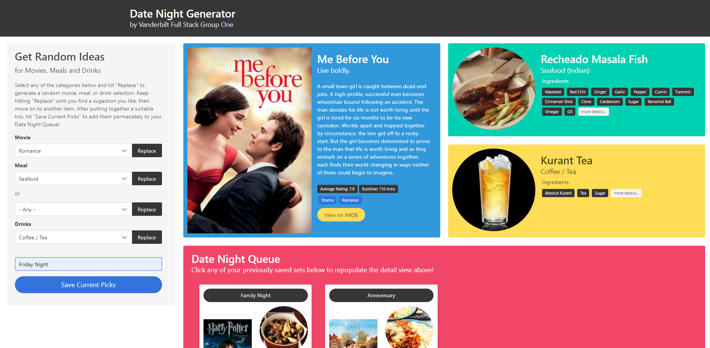

Project #1
Date-Night-Generator, 2021
Description:
Get suggestions for great movie, meal and drink combinations and save your favorite groupings to a date night queue. get random movie suggestions based on genre get random meal suggestions based on categories or country of origin get random drink suggestions based on categories display the most pertinent information in the featured item view drill down to a detail view for recipe instructions or videos from the featured view save all items in the featured view as a date night and place them in the queue user is given the option to individually name each date night when saving if the user doesn't name the date night, a name is auto-generated clicking previously saved date nights repopulates the featured item view with their details user may add and remove date nights from the queue in detail view, print the recipes with only text to be printer-ink-friendly page is responsive and mobile friendly
Project #2
Run-Buddy, 2021

Description:
Under Construction